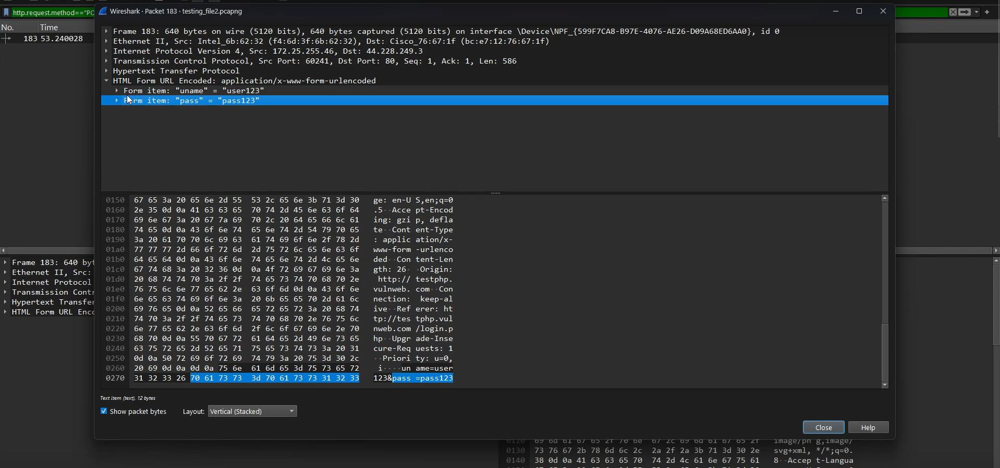
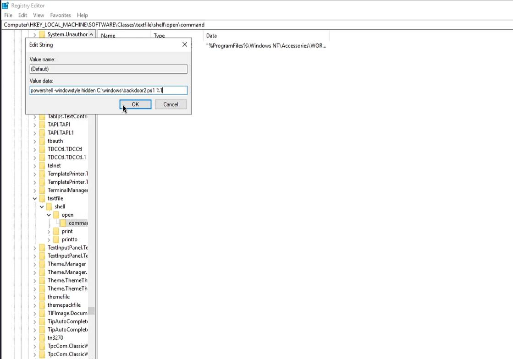
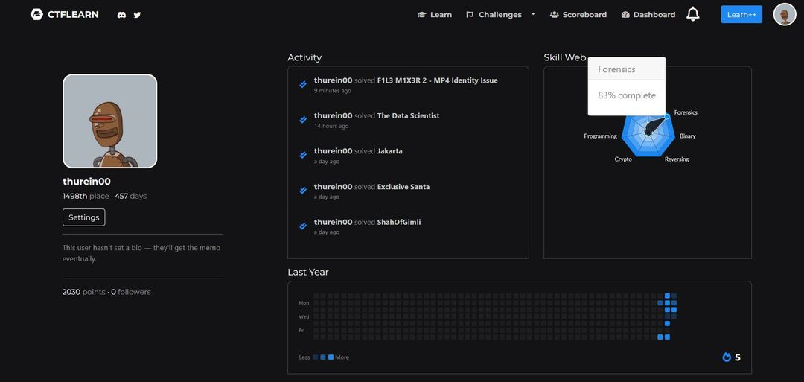
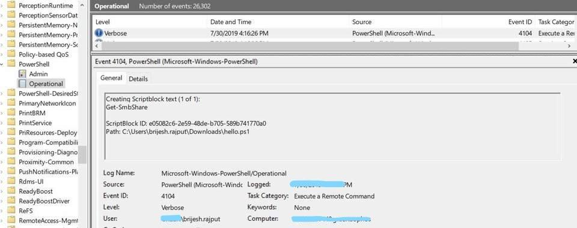

.png)
Welcome to our page!
We are passionate about sharing insights and knowledge on red teaming and cybersecurity. Our team is dedicated to providing valuable resources, training, and updates on the latest trends in the cybersecurity field. Whether you're a seasoned professional or just starting out, we aim to be your go-to source for all things red teaming and cybersecurity.
Key Points:
- Passionate about sharing insights and knowledge
- Dedicated to providing valuable resources, training, and updates
- Go-to source for all things red teaming and cybersecurity
Blog
Windows system on linux
Wsl ဆိုတာကတော့ window ပေါ်မာကိုပဲ features တစ်ခုအနေနဲ့ linux (GUIတော့မဟုတ်ပါ) ကို သုံးလို့ အဆင်ပြေအောင် Microsoft company က၂၀၁၆ ခုနစ်မှာ compatibility layer တစ်ခု ဖြစ်ပါတယ်။
Usage အနေနဲ့ကတော့ linux ကိုလည်း မပြောင်းချင်သေးဘူး ဒါပေမယ့် linux command line ကိုလည်း PCမှာစမ်းသုံးကြည့် ချင်တယ် ဆိုတဲ့ သူတွေ အတွက်တော်တော်အဆင်ပြေတဲ့ tools တစ်ခုပါ ဘာလို့လည်း ဆိုတော့ အဲ့ဒီမာ ကိုသုံးချင်တဲ့ OS (ubuntu, debian, kali) စသဖြင့် os system ပေါင်း များစွာရှိတော့ တစ်ခုပီဲးတစ်ခု လှည့်သ◌ုံးလို့လည်း ရတာပေါ့။
Read moreLinux Before Linux

windows ကနေ linux ပြောင်းမယ်ဆိုရင် main OSအနေနဲ့ မသုံးခင် vmware ဖြစ်ဖြစ် visual box မာဖြစ်ဖြစ် ၁ပတ်လောက်တော့ စမ်းသုံးကြည့်သင့်တယ်ထင်တယ် မဟုတ်ရင်ပြီးမှ အဆင်မပြေရင် တိုင်တော်တော်ပတ်ပါတယ်။
When we want to use linux Operating system, we should use in a Vmware or visual box for a week if not we can have a problems in their command or GUI(such as Arch linux).
Read morePseudocode
Programing language basic မပြောနဲ့ computer basic တောင်မသိကြတဲ့ သူတွေအနေနဲ့ သင်တန်းတွေ မတက်ခင် အရင်လုပ်ရမယ့် အရာကို အကြံပေးဆိုရင် အခုတလောပြန်ဖြေတဲ့ အဖြေကတော့ Youtube or free website တွေကနေ အရင် ကိုယ်နဲ့ သင့်တော်တဲ့ language ကို လေ့လာကြည့်ပါ
For those who don’t even know programming language basics, let alone computer basics, if you advise what to do first before attending the courses, the current answer is to learn the language that suits you first from YouTube or free websites. Lately, more and more students don’t teach pseudocode deskchecking concepts because they say they don’t need them, so the trainees also put less effort into thinking. That’s why I’m going to study programming now.
Read moreHDD volume Hiding Technique

ပထမဆုံး ကျွန်တော်တို့ hidden လုပ်ချင်တဲ့ volume ကို သိရပါမယ် အခုတော့ ကျွန်တော့်မှာ volume မရှိသေးတဲ့အတွက် volume တစ်ခုတည်ဆောက်ဖို့ လက်ရှိ ရှိနေတဲ့ C ကနေ partition ခွဲပြီး Dဆိုပြီး volume တစ်ခုတည်ဆောက်လိုက်ပါမယ်။
လက်ရှိ Cထဲကနေ နောက် volume တစ်ခု တည်ဆောက်ဖို့ဆို ကျွန်တော်တို့ shrink volumeလုပ်ရမယ် ပြီးရင်တော့ တဆင့်ချင်းဆီ custom လုပ်ပြီးတော့ volume တစ်ခု တည်ဆောက်ထားလိုက်ပါမယ်။
Read moreFlipper Zero Setup

Unboxing တွေ ဘာတွေတော့ အရမ်းထူးထူး ခြားခြားမရှိလို့ ကျော်လိုက်ကြတာပေါ့ flipper zero လည်းလက်ထဲရောက်နေပြီ ဆိုရင် sd card ထည့် original USB နဲ့ PCနဲ့ ချိတ်လို့ပြီးသွားရင် ပထမဆုံး အနေနဲ့ https://flipperzero.one/update ကနေ flipper ကို download လုပ်ပြီး pc ကနေ file import and update လုပ်ဖို့ downလိုက်ရင် ကျွန်တော်တို့ flipper ကို pc က နေ control access ရပါလိမ့်မယ် update လုပ်ပြိးသွားလို့ external sourcesတွေ ထည့်ချင်ရင်တော့
https://github.com/UberGuidoZ/Flipper ဒီကနေ git clone to github desktop နဲ့ ဆိုရင် အခြေခံ လိုအပ်တဲ့ package တွေတော့ အဆင်ပြေသွားပါလိမ့်မယ်။ git clone steps မှာ git clone ကို Vscode နဲ့ terminal မာ clone ရင် တော့ antivirus and firewall ကို off ထားရပါမယ် zip file အနေနဲ့ down ရင်လည်း အချိန်တကယ် ကြာပါတယ် ကျွန်တော့်တုန်းက စမ်းတုန်းကတော့ 5နာရီလောက်ကြာတဲ့ အတွက် github desktop မာပဲ clone လုပ်စေချင်ပါတယ်။
Read moreIPv6 ရဲ့ vulnerability (အားနည်းချက်)
IPv4 address နည်းလာတဲ့ အတွက် IPv6 ကိုသုံးလာကြရတဲ့ အခါ IPv6 ရဲ့ လုံခြုံရေး အားနည်းချက်တခုကို သိထားဖို့ လိုအပ်လာပါတယ်။
ကျွန်တော်တို့တွေ အရင်ကဆို Windows ရဲ့ IPv6 feature ကို Network Card Properties မှာ သွားပြီး Disable လုပ်ကြတာကို မှတ်မိကြမယ်ထင်ပါတယ်။ အဲတုန်းကဆို ဘာလို့လုပ်လဲ ဆိုတာ သိပ်နားမလည်ဘူး။ တကယ်က ဒီလိုဗျ IPv4 ကော IPv6 ကော 2 မျိုးစလုံး သုံးထားတဲ့ Host တခု (သို့မဟုတ်) IPv6 သုံးထားတဲ့ Host တခုက Network ကို ချိတ်ပြီဆိုတာနဲ့ သူက IPv6 enable လုပ်ထားတဲ့ Router ဆီကို ICMPv6 (type 133) Router Solicitation (RS) message ကို ပို့ပါတယ်။
Read moreWhy should we use print() instead of alert()

XSS vulnerability ပေါက်နေတာမျိုးတွေ တွေ့တဲ့အခါ များသောအားဖြင့် ကျွန်တော်တို့က alert() function ကိုပဲအသုံးများပေမယ့် အကယ်၍ ကျွန်တော်တို့က Chrome version ကိုမှ 92 (20 july 2021)ထက် update version ဖြစ်ပြီးသုံးနေမယ်ဆိုရင်တော့ Chrome ကနေပြီး alert() functionခေါ်လို့ရမှာမဟုတ်တော့ပါဘူး။
အဲ့တာကြောင့် Google chrome version date 20 july 2021ကနေစပြီး XSS PoCsပြဖို့အတွက် alert() function ပြီးတော့ ping back လုပ်တာမျိုးတွေကိုလည်း Chrome ရဲ့ javascript obfuscators ကနေပြီးတော့ disable လုပ်တော့ console.log() ကိုလည်း သုံးလို့မရနိုင်ပါဘူး။
Read moreHow to find sensative data in wireshark
အခုတစ်ခေါက်မှာတော့ ကျွန်တော်က same network ဖြစ်နေတဲ့ devices တွေမှာ Login data ပါတဲ့ packagesတွေကို ဖမ်းပြီးရင် search barမှာ ဘယ်လိုရှာရလည်းဆိုတာကို ပြောပြချင်တာပါ။
အရင်ဆုံး wiresharkဖွင့်ထားပြီး 1ogin testing page တစ်ခုဖြစ်တဲ့ http://testphp.vulnweb.com/login.php မှာ စမ်းထည့်ကြည့်ပါမယ်။ ပြီးရင်တော့ ကျွန်တော်တို့ wiresharkကို stopလုပ်ပြီးတော့ File ကို saveလုပ်လိုက်ပါ ပြီးရင်တော့ ကျွန်တော်တို့ အဲ့ file ကို ပြန်ဖွင့်ပြီး search barမှာ http.request.method=="POST"ဆိုပြီးရှာလိုက်ရင် login dataတွေကို တွေ့နိုင်မှာပါ။
Read moreHijacking File Associations
ဒီမှာဆိုရင် ပုံမှန် reverse shellဆိုတာထက် ကျွန်တော်သဘောကျတဲ့အပိုင်းကတော့ winRegမှာ Value dataကို ဝင်ပြင်ပြီးတော့ file typeတစ်ခုခုကို targetထားပြီး တော့ ဉပမာ txt fileဆိုရင်လည်း ကျွန်တော်တို့ရဲ့ Local Machineမာ ဘယ်txtကိုနိပ်ရင်ပဲ ဖြစ်ဖြစ် reverse shellကို ပြန်forwardလုပ်သွားမှာပါ။ ပထမ အနေနဲ့ဆိုရင် ကျွန်တော်တို့ လုပ်ချင်တဲ့ file typeကို အရင်ရွေးကြရပါမယ် WinRegထဲကနေ file extensionကိုရွေးပြီးတော့ ProgIDကိုရှာပြီးရင် ProgID folder အောက်က openမှာ ကျွန်တော်တို့ data valueကိုပြင်ကြရပါမယ်။ ပြင်တဲ့အခါမှာလည်း createdလုပ်ထားတဲ့ revershell ပါတဲ့ powershell file ကို file pathမှာ ထားလိုက်ပါမယ်။
ပြီးရင်တော့ ကျွန်တော်တို့ အနေနဲ့ local machine မှာရှိတဲ့ ဘယ် txt fileမဆို ဖွင့်လိုက်ရုံနဲ့ ကျွန်တော်တို့က listenလုပ်နေတယ်ဆိုရင် reverseshell connectဖြစ်သွားပါလိမ့်မယ်။
POC videoForensics Labs Walkthrough
Excited to share my progress on CTFLearn forensic labs! I've completed 19 live walkthroughs, covering various challenges, and streamed them on both YouTube and Twitch. Since they were live sessions, you’ll also see the errors and troubleshooting I encountered along the way.
POC videoBrowser Forensics

အခုအပိုင်းမှာတော့ ကျွန်တော်က ပုံမှန်ဝင်လေ့ဝင်ထရှိတာနဲ့ ဝင်ကြပြီးတော့ historyကိုပြန်ဖျက်တဲ့အခါမှာ browser historyမှာ တော့ ကျွန်တော်တို့ရဲ့ recent website historyက ပျက်သွားပေမယ့် ကျွန်တော်တို့ရဲ့ Web historyတွေကိုသိမ်းတဲ့ File pathဖြစ်တဲ့ “C:\Users\[username]\AppData\Local\Google\Chrome\User Data\Default\History” (Chrome Data) “C:\Users\[username]\AppData\Roaming\Mozilla\Firefox\Profiles\[randomfoldername]\places.sqlite” on Firefox
notion linkPowershell in security
ဒီအောက်က Noteထဲမှာဆိုရင်တော့ အဓိက အားဖြင့်ကတော့ powershell Commandတွေရဲ့ Usage တွေကို ရှင်းပြထားပါတယ်။ ပုံမှန်ဆိုရင် ကျွန်တော်တို့က dir/ls စသဖြင့် သုံးကြပေမယ့် Get-ChildItem တို့လိုဟာတွေကို မစမ်းဖြစ်တာကြောင့် သိထားတော့ပိုအဆင်ပြေအောင် Noteထဲမှာ command တွေရဲ့ ALIASES nameတင်မကပဲ မူရင်း NAMEတွေကို ပါ ရှာဖို့ ScreenShotနဲ့ပါ ပြထားပါတယ်။ နောက် section မှာတော့ power shell scriptကို ပဲရေးပြထားပြီးတော့ spolit sourceတွေပါ linksတွေနဲ့ shareထားပါတယ်။
Medium linkVlog
Sample Videos
Disk Volume hiding in windows step by step Tutorial
How to create a port scanner with python
Sample Video Title
How computer work and Software development life cycle
Video Title 1
How to use Virtual Machine on M1 and M2 chip base Macbook using UTM
Video Title 1
How to create a table with Microsoft access and most common error in there
Video Title 1
How to create a bad usb stick
Video Title 1
How to hide your image file in audio file using stenography technique
Video Title 1
Hijacking File Associations in WinReg
Video Title 1
Static Property-Based Signatures TryHackMe Walkthrough
Tools
Most of my tools are written in Python and C family languages, and they are primarily designed for red teaming purposes.